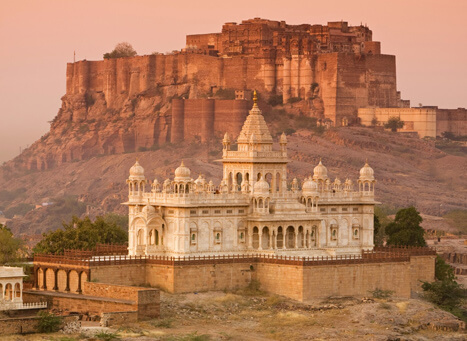

MEHRANGARH FORT
Last Updated: December 25, 2019
Every year, during summer tourists from all over the world visit this holy destination of Kedarnath in the Rudraprayag district of Uttarakhand to get the blessings of almighty Lord Shiva. A Kedarnath pilgrimage is incomplete without a visit to the 1000-year-old Kedarnath Temple, which was built using large slabs of stone on a 6-foot-high rectangular base.
Rajasthan is considered to be one of the most ethnic states in India. It has a rustic charm about it that transform you to a bygone era. Most places in Rajasthan display a true picture of the rich Indian heritage and culture. In a lot of ways, Rajasthan feels more Indian than any other state. One of the biggest reasons for this is the magnificent monuments in this state. These monuments that were built hundreds of years ago still stand tall and have been so well-preserved that they give us an amazing sneak peek into history. Rajasthan has seen many rulers in the past who have all left their mark on the state. The most fascinating aspect about Rajasthan is its forts. These huge structures are testimonies to the splendour Rajasthan has witnessed all through history. They take you back to the time of kings and queens, commoners and ministers. These forts also bear marks of historic events that changed India forever. But most importantly, these forts are so beautiful and amazing to look at, that they make you realize how small you really are. Here are some amazing forts in Rajasthan that you cannot afford to miss.
Mehrangarh fort
Located in the beautiful blue city of Jodhpur, the Mehrangarh fort is arguably the finest fort in India. It is one of the largest forts in Rajasthan and is known all across the globe for its stunning architecture and history. It is famous for being the seat of the Rathore rulers from the house of Marwar. The fort is located 400 feet above Jodhpur city and housed the Marwar family before they moved to other grand palaces. It once also offered sanctuary to Mughal emperor Humayun who was fleeing to Persia after being defeated by Sher Shah Suri. It was on May 12, 1459 that the 15th Rathore ruler, Rao Jodha laid the foundation of the Mehrangarh fort. At that time, Mandore which is located around 15 km from Jodhpur was the capital. However, for better safety and security reasons, Rao Jodha moved the capital to the Mehrangarh fort. The hill on which Mehrangarh stands was formerly known as ‘Bhaurcheeria’. It had just one human accoupant, a hermit named Cheeria Nathji. Rao Jodha displaced him in order to set up his capital at Mehrangarh. Upset and infuriated with the displacement, Nathji cursed Rao Jodha that the Mehrangarh fort would suffer scarcity of water. Then, in order to circumvent this curse, a man named Rajiya Bambi was buried alive in the foundations of the fort. In return for this sacrifice, Rao Jodha primised Bambi that his family will be well looked after. To this day, Rajiya Bambi’s descendants live in Raj Bagh. According to another legend, Rajiya was not the only one buried alive. Four people were buried here including Rajiya Bambi’s son and a Brahmin named Mehran. The fort is believed to have been named after this Brahmin. The fort’s architecture is a marvel in itself. It is 125 ft high and has solid stone walls. At places, these walls are 6 metres thick. There are several palaces inside the fort’s boundaries. The intricate carvings and expansive courtyards in these palaces remind you of the glory of the Rathore era. There is a downward winding road which leads into the city. You can still see some cannonball imprints on the second gate which were made by the attacking armies of Jaipur. Right next to the fort on its left is the chhatri of Kirat Singh Soda, a soldier who fell defending the fort. Mehrangarh has seven gates, most popular among which is Jayapol (meaning ‘victory’) which was built by Maharaja Man Singh to commemorate his victories over the armies of Jaipur and Bikaner. Another gate named Fattehpol was built by Maharaja Ajit Singh to mark the defeat of the Mughals.
Today, the fort houses a museum which gives visitors a sneak peek into the golden age of the Rathores. It showcases various collections of historical artefacts ranging from palanquins to cannons and furniture to paintings and folk musical instruments. In this museum, you can witness the heritage of the Rathores in arms, paintings, costumes, and decorated period rooms. The gallery named Daulat Khana houses one of the finest collections of Mughal miniature paintings. The Mehrangarh fort is also the venue for the highly acclaimed and popular Rajasthan International Folk Festival and World Sufi Spirit Festival. There is also an excellent zip-lining tour here organized by Flying Fox. Across 6 zip lines, you can go around the fort with stunning views of the blue city. Timings: The Mehrangarh fort is open on all days between 9 am and 5 pm. The best time to visit Jodhpur is in the winter months of November to February. Entry fee: Rs. 60 for Indians and Rs 400 for foreigners. On May 12, the fort’s foundation day, entry is free.
How to reach: Mehrangarh fort is located in the city of Jodhpur. It is around 9 km away from the Jodhpur airport and around 6 km away from the Jodhpur Railway station. Where to stay: Jodhpur is a major tourist attraction in Rajasthan and therefore has several accommodations options ranging from luxury to budget. Castle view homestay provides a great view of the Mehrangarh fort and is worth a try. Hotel RAAS is another good hotel for a comfortable stay with a great view.